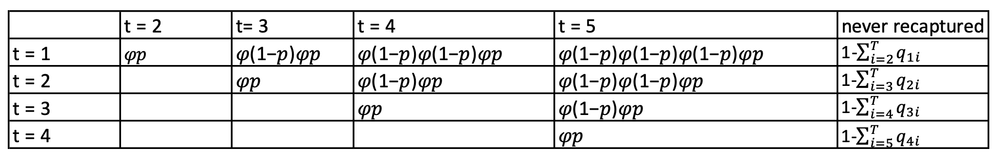

| 2009 | 2010 | 2011 | 2012 | 2013 | 2014 | 2015 | 2016 | 2017 | 2018 | 2019 | 2020 | 2021 | Sex |
|---|---|---|---|---|---|---|---|---|---|---|---|---|---|
| 1 | 0 | 1 | 1 | 1 | 1 | 1 | 1 | 1 | 1 | 1 | 1 | 1 | M |
| 1 | 0 | 0 | 1 | 1 | 1 | 1 | 1 | 1 | 1 | 1 | 1 | 1 | F |
| 1 | 0 | 0 | 0 | 0 | 0 | 0 | 0 | 1 | 0 | 0 | 0 | 0 | F |
| 1 | 0 | 0 | 1 | 1 | 1 | 1 | 1 | 1 | 1 | 1 | 1 | 1 | F |
| 1 | 0 | 0 | 0 | 0 | 0 | 0 | 0 | 0 | 0 | 0 | 0 | 0 | F |
| 1 | 0 | 0 | 0 | 0 | 0 | 1 | 1 | 1 | 1 | 1 | 1 | 1 | F |
The project is motivated by a capture-recapture dataset from the largest colony of common guillemot in the Baltic Sea, Stora Karlsö. Data were recorded from 2009 to 2021.
Photo by Aron Heidström, Baltic Seabird Project
Seabirds inhabit marine ecosystems and they share several life history traits: high adult survival, a progressive access to reproduction at relatively old ages, a low reproductive rate and a low number of natural predators. Adult survival as well as juvenile survival, are considered important traits that influence population dynamics in seabird species. However, survival estimation can be challenging.
Ideally, individuals would be followed from birth to death with a given study period, but this is rarely possible for wild populations. The problem arises since the observation process relating to individuals is imperfect, and hence we cannot always make a direct measurement of the state variable of interest (i.e. alive or dead). In the wild, if an individual is not observed two options are possible: (i) it is dead, or (ii) it is still alive (but it has not been observed). This problem can be addressed using the capture-mark-recapture (CMR) method.
CMR methods use data collection protocols where observers go into the field at a series of capture events, denoted t = 1, . . . , T. At each capture event, the observer marks the new individuals, records all observed individuals (already marked) and releases them back into the population. This leads to data corresponding to the capture history of each individual, detailing at which capture occasions they are observed or not.
A capture history or capture-recapture takes the form of a vector of length the number of encounter occasions \(T\), and records the value 1 for a live encounter and 0 when an individual was not encountered. This data set also contains the sex of each individual as an additional information. The main interest in this project is to estimate the main parameters, which are the recapture and the apparent survival probabilities. The survival probabilities, denoted by \(\phi_t\), represent the probability of that an individual is alive at time \(t\) and survives until time \(t+1\) (for time \(t = 1, ..., T-1\), for all individuals). Similarly, the recapture probabilities, denoted by \(p_t\) represent the probability of observing an individual at time \(t\) (from \(t = 2, ..., T\) and for all individuals).
We use \(p_t\) to denote the recapture probability at occasion \(t\), ang \(\phi_t\) to denote the apparent survival probability between occasion \(t\) and \(t+1\).
The primary interest in these studies is usually the estimation of survival probabilities and the associated factors (or covariates) that may influence these. Such covariates may include for example, age, environmental covariates, sex, individual heterogeneity, etc. In this project we will focus on the estimation of age and/or sex-dependent survival probabilities for this colony of common guillemots. This will involve developing statistical models to incorporate and assess the impact of age and sex on the survival estimates within a formal modelling framework in order to improve our understanding of the population which in turn may aid in their management and conservation.
In the next table, and for simplicity, we present a subset of the data,
Each row contains a capture history across 13 occasions for each individuals with the last column indicate their sex. The database contains information about 117 individuals, all of them ringed as chicks i.e. at age 1, therefore \(T = 13\).
In this study we will use the standard Cormack-Jolly-Seber (CJS) model which is considered a general framework for several number of extensions and which is conditional at initial capture (ringing time). More information about these and related models see: Serber and Schofield, 2019; McCrea and Morgan, 2015; king et al. 2010 (among many others).
We are going to implement CJS models in the frequentist approach, building likelihood function for each model, then use optim function to find the maximum likelihood estimate (MLE) for \(\boldsymbol{p}\) and \(\boldsymbol{\phi}\) parameters.
1. Constant Model
We start with the most basic model: model with constant \(\boldsymbol{p}\) and \(\boldsymbol{\phi}\) parameters. In other words, recapture and survival probabilities are invariant with age, time and sex.
Firstly, we need to transform the capture history into m-array format. M-array is a \((T-1) \times T\) matrix with each row representing a released occasion (\(i = 1, ..., T-1\)), and each column representing a recapture occasion (\(j = 2, ..., T\)). The last column contains the number of individuals that have never been recaptured in each released occasion. For example, the \([1, 2]\) cell contains the number of individuals which released in occasion 1 and next recaptured in occasion 2.
We have defined a function marray in functions.R file to help us to transform the data. Let marr.full be the m-array of the full data set, which is shown below.
| j = 2 | j = 3 | j = 4 | j = 5 | j = 6 | j = 7 | j = 8 | j = 9 | j = 10 | j = 11 | j = 12 | j = 13 | never recaptured | |
|---|---|---|---|---|---|---|---|---|---|---|---|---|---|
| i = 1 | 0 | 1 | 2 | 1 | 0 | 1 | 0 | 1 | 0 | 0 | 0 | 0 | 1 |
| i = 2 | 0 | 0 | 0 | 2 | 1 | 1 | 0 | 1 | 0 | 0 | 0 | 0 | 1 |
| i = 3 | 0 | 0 | 1 | 0 | 5 | 4 | 0 | 0 | 0 | 0 | 0 | 0 | 0 |
| i = 4 | 0 | 0 | 0 | 3 | 0 | 2 | 1 | 0 | 0 | 0 | 0 | 0 | 3 |
| i = 5 | 0 | 0 | 0 | 0 | 6 | 2 | 11 | 4 | 0 | 0 | 0 | 0 | 3 |
| i = 6 | 0 | 0 | 0 | 0 | 0 | 12 | 0 | 1 | 0 | 0 | 0 | 0 | 0 |
| i = 7 | 0 | 0 | 0 | 0 | 0 | 0 | 21 | 1 | 0 | 0 | 0 | 0 | 0 |
| i = 8 | 0 | 0 | 0 | 0 | 0 | 0 | 0 | 33 | 0 | 0 | 0 | 0 | 1 |
| i = 9 | 0 | 0 | 0 | 0 | 0 | 0 | 0 | 0 | 37 | 2 | 6 | 1 | 12 |
| i = 10 | 0 | 0 | 0 | 0 | 0 | 0 | 0 | 0 | 0 | 35 | 4 | 10 | 17 |
| i = 11 | 0 | 0 | 0 | 0 | 0 | 0 | 0 | 0 | 0 | 0 | 31 | 1 | 26 |
| i = 12 | 0 | 0 | 0 | 0 | 0 | 0 | 0 | 0 | 0 | 0 | 0 | 35 | 6 |
Next we are going to form a likelihood function for the constant model.
Let \(\underline{x}\) be the capture history of the whole data where \(x_i\) is the capture history of individual \(i = 1, ..., 117\), and \(\boldsymbol{\theta}\) be the parameters used to estimate \(p\) and \(\phi\). Since we are going to use optim to maximise the negative log likelihood function to give the MLE of the desired parameters, we need to remove the boundary of the parameters. Let \(\boldsymbol{\theta}\) be an array contains the logit transformation of the parameters \(\phi\) and \(p\), then the boundary of \(\boldsymbol{\theta}\) is now all real numbers instead of \((0, 1)\).
Each row of the m-array follows a multinomial distribution with parameters \(N_i\) and \(\underline{q}\), then the likelihood function of the whole data is the product of multinomial distribution, i.e.
\[ L(\underline{x};\theta) = \prod_{i}^{T-1}Multinomial(N_i, \underline{q}) \] where \(N_i\) represents the total number of released animals at time \(i\) and \(\underline{q} = f(\phi, p)\) is a matrix which represents the cell probabilities depending on \(\boldsymbol{\phi}\) and \(\boldsymbol{p}\).
Now we are going to explain how to construct \(\underline{q}\).
Firstly we need to explain how to compute the probability of a capture history. For example, if we have a capture history
\[ x_i = 1 \quad 1 \quad 0 \quad 1 \quad 1 \]
the probability of this capture history is
\[ \mathbb{P}(x_i) = \phi p \phi (1-p) \phi p \phi p \]
So each cell in matrix \(\underline{q}\) represent the probability of an individual being in the corresponding cell in the m-array. As the row sum of the probabilities is 1, the last column which represent the probability of never recaptured is 1 - row sum. For example, when \(T = 5\), matrix \(\underline{q}\) has the form shown below.

We need the log likelihood function for simple calculation. The log likelihood function is constructed by
\[ l(\underline{x}, \theta) = \sum_{i}^{T-1} \log{Multinomial(N_i, \underline{q})} = \sum_{ i= 1}^{T-1} \sum_{j = 2}^{T}\text{m-array}[i, j] \times \log{\underline{q}[i, j]}. \]
We create a function caplik.constant for the negative log likelihood function, then use optim to find the MLE of our parameters of interest, \(\boldsymbol{\theta}\). Transfer the estimate of \(\boldsymbol{\theta}\) back to \(p\) and \(\phi\) using plogis. Also, we can obtain standard error for each parameter from inverting the Hessian matrix at the MLE.
We can compute the credible interval for each parameter using bootstrap method. Take 50 resamples, find lower and upper quantile for the estimated parameters. The MLE, SD, and 95% credible interval (CI) for estimated parameters are shown below.
| MLE | SD | CI | |
|---|---|---|---|
| \(p\) | 0.539 | 0.098 | [0.473,0.592] |
| \(\phi\) | 0.932 | 0.093 | [0.903,0.958] |
2. Sex dependent survival probabilities
Since the recapture probability is high (\(p =\) 0.539), we do not expect any difference if we model them age or sex dependent. Hence, we would keep \(p\) constant in this analysis. Now we are curious about whether the survival probabilities vary with sex. Let \(\phi_m\) and \(\phi_f\) to represent the survival probabilities of male and female. We split the database into 2 separated database according to their sex, and denote them CH.m and CH.f respectively.
The likelihood function is slightly different from the constant model, since we have to form two \(\underline{q}\) matrix for both male and female. The log likelihood function becomes
\[ l(\underline{x};\theta) = l(\underline{x_m};\theta_m) + l(\underline{x_f};\theta_f) \]
where
\[ l(\underline{x_m}, \theta_m) = \sum_{i = 1}^{T-1} \sum_{j = 2}^{T}\text{m-array}_m[i, j]\times \log{\underline{q_m}[i, j]} \quad \text{and}\\ l(\underline{x_f}, \theta_f) = \sum_{i = 1}^{T-1} \sum_{j = 2}^{T}\text{m-array}_f[i, j]\times \log{\underline{q_f}[i, j]}, \]
so we also need to construct \(\underline{q}\) for the different sex class. Define function caplik.sex to compute the negative log likelihood for this model.
The estimates for \(p\) and \(\phi\) depends on sex are shown below.
| MLE | SD | CI | |
|---|---|---|---|
| \(p\) | 0.539 | 0.098 | [0.476,0.583] |
| \(\phi_m\) | 0.92 | 0.135 | [0.86,0.95] |
| \(\phi_f\) | 0.944 | 0.127 | [0.885,0.977] |
The difference between \(\phi_m\) and \(\phi_f\) is about 0.02. From the result above, it seems like the sex of an individual does not affect the apparent survival probability.
3. Model with Age-dependent survival probabilities
Next, we want to see if the age of an individual affect the survival probabilities. Usually, young individuals have lower survival probabilities than adults. We denote \(\phi_a\) as the apparent survival probability for individuals at age \(a\). We are going to consider different number of age classes:
- \(a = 1, 2, 3+ //\phi_1, \phi_2, \phi_{3+}\)
- \(a = 1, 2, 3, 4+ //\phi_1, \phi_2, \phi_3, \phi_{4+}\)
- \(a = 1, 2, 3, 4, 5+ //\phi_1, \phi_2, \phi_3, \phi_4, \phi_{5+}\)
then we decide which model is the best.
In CJS model, in m-array formulation, we will need to construct one m-array for each age class. For instance, for 3 age classes, we will have to construct 3 m-arrays and 3 \(\underline{q}\) matrices accordingly.
Since the age of individuals changes through years, cell probabilities in \(\underline{q}\) are different from the sex case. The probability of capture history also changes as we have a different \(\phi_a\) for different age \(a\).
Using the same example as before, for a capture history
\[ x_i = 1 \quad 1 \quad 0 \quad 1 \quad 1 \]
the probability of this capture history is now
\[ \mathbb{P}(x_i) = \phi_1p\phi_2(1-p)\phi_3p\phi_3p \]
While we have only 3 age classes, \(\phi_a\) beyond the third occasion after the first capture are all \(\phi_3\) instead of \(\phi_4, \phi_5\) etc.
Now, for example, when \(T = 5\) and if we choose to have 3 age classes, the \(\underline{q}\) for age 1 individuals is like
Similar structure will have ages 2, 3, 4 and 5+. For the likelihood function, the construction is the same as before with log likelihood
\[ l(\underline{x};\theta) = \sum_{a}^{A} l(\underline{x_{a}};\theta_{a}) \] with \(A = 3, 4, 5\) representing the number of age class. For example, \(a = 1, 2, 3, 4\) for \(A = 4\).
For our data, we do not have any individuals re-captured on the occasion after the first capture, i.e. we have not seen any 1 year old individual (which is often the case), so we can not estimate \(\phi_1\) and \(p\) separately, only its product \(\phi_1 p\). Therefore we let \(\phi_1 = 1\) and \(p_1 = 0\) (here \(p_1\) means \(p\) for occasion 2), the rest of the calculation remains the same. Therefore, \(\phi_2\) can be interpreted as the survival probability until 2 year old. Define functions caplik.age3, caplik.age4 and caplik.age5 for the three models.
The estimate for each model is shown below.
| 3 age classes | 4 age classes | 5 age classes | |||||||
|---|---|---|---|---|---|---|---|---|---|
| MLE | SD | CI | MLE | SD | CI | MLE | SD | CI | |
| \(p\) | 0.705 | 0.107 | [0.651,0.768] | 0.752 | 0.107 | [0.686,0.801] | 0.71 | 0.107 | [0.643,0.803] |
| \(\phi_2\) | 0.636 | 0.235 | [0.556,0.742] | 0.592 | 0.235 | [0.507,0.67] | 0.605 | 0.235 | [0.484,0.677] |
| \(\phi_3\) | 0.981 | 0.114 | [0.965,0.992] | 1 | 0.252 | [1,1] | 1 | 0.252 | [0.998,1] |
| \(\phi_4\) | - | - | - | 0.967 | 0.129 | [0.951,0.992] | 0.979 | 0.293 | [0.926,1] |
| \(\phi_5\) | - | - | - | - | - | - | 1 | 0.143 | [0.941,1] |
From the results we can see that individuals with more than 2 years old have a higher apparent survival probability for all models as we expected.
We have done three age-dependent models, now we are going to decide which one is the best model. In this analysis, we are going to use the Akaike Information Criterion (AIC) approach for model-selection. The AIC of a model is defined as
\[ AIC = -2\log{L(\underline{x}, \hat{\theta})} + 2d \] where \(d\) is the number of parameters estimated. The model with the smallest AIC value is preferred.
Compute the AIC for each model, the result is shown below
| AIC | |
|---|---|
| 3 age classes | 635.002 |
| 4 age classes | 637.002 |
| 5 age classes | 639.002 |
The model with 3 age classes has the lowest AIC = 635.002 and therefore it is the best among the three age-dependent models.
4. Models with survival probabilities age and sex dependent
We have already implicated models where survival probabilities were sex-dependent as well as age-dependent. Now we are going to combine them together, which means that survival probabilities we will depend on age and sex, \(\phi_{a,s}\). For example, \(\phi_{1,m}\) represent survival probability for individuals who are male and at age 1. For 3 age classes, we have in total 7 parameters, a constant \(p\), and 6 \(\phi\) for both males and females at different age. We will also do 3 models with different numbers of age classes as before.
The log likelihood function now becomes
\[ l(\underline{x};\theta) = \sum_{a}^{A} l(\underline{x_{a,m}};\theta_{a,m}) + \sum_{a}^{A} l(\underline{x_{a,f}};\theta_{a,f})\\ \]
We use the same approach as before, define three functions caplik.age3.sex, caplik.age4.sex and caplik.age5.sex accordingly, the result for each model shows below.
| 3 age class | 4 age class | 5 age class | ||||||||||
|---|---|---|---|---|---|---|---|---|---|---|---|---|
| sex | male | female | male | female | male | female | ||||||
| MLE | SD | MLE | SD | MLE | SD | MLE | SD | MLE | SD | MLE | SD | |
| \(p\) | 0.705 | 0.107 | 0.705 | 0.107 | 0.691 | 0.107 | 0.691 | 0.107 | 0.745 | 0.107 | 0.745 | 0.107 |
| \(\phi_2\) | 0.621 | 0.327 | 0.653 | 0.334 | 0.632 | 0.327 | 0.664 | 0.334 | 0.593 | 0.327 | 0.625 | 0.334 |
| \(\phi_3\) | 0.981 | 0.171 | 0.981 | 0.153 | 0.981 | 0.348 | 0.999 | 0.364 | 0.997 | 0.348 | 0.998 | 0.364 |
| \(\phi_4\) | - | - | - | - | 1 | 0.197 | 0.99 | 0.169 | 0.999 | 0.416 | 0.967 | 0.413 |
| \(\phi_5\) | - | - | - | - | - | - | - | - | 0.957 | 0.224 | 0.975 | 0.186 |
Compute the AIC for each model.
| AIC | |
|---|---|
| 3 age classes | 639.195 |
| 4 age classes | 648.023 |
| 5 age classes | 624.962 |
From the results above, the model with the lowest AIC = 624.962 is the one with 5 age classes. As we can see, there is almost no sex effect on the estimate of survival probabilities in this model. Hence we would like to set some of the \(\phi.m\) and \(\phi.f\) to be the same for some certain age class to see if the model improves.
Model selection
Now we choose 5 models, and assess their performance:
- Model 1: all survival probabilities differ for males and females
- Model 2: \(\phi_{2.m} = \phi_{2.f}\)
- Model 3: \(\phi_{2, 3.m} = \phi_{2, 3.f}\)
- Model 4: \(\phi_{2, 3, 4.m} = \phi_{2, 3, 4.f}\)
- Model 5: constant survival probabilities for both males and females
Following the same methedology previously explained, we form the likelihood function for each model and then use optim to find the MLE. We then compute the AIC of each model with the following results,
| Model | AIC |
|---|---|
| 1. all phi depends on sex | 624.544 |
| 2. phi2.m = phi2.f | 719.15 |
| 3. phi2,3.m = phi2,3.f | 625.901 |
| 4. phi2,3,4.m = phi2,3,4.f | 619.17 |
| 5. constant phi | 628.78 |
Model 4 gives the lowest AIC = 619.17. So we set \(\phi_{2, 3, 4.m} = \phi_{2, 3, 4.f}\), and a different survival probabilities for 5 years old males and females, the estimate of the parameters are shown below.
| MLE | SD | CI | |
|---|---|---|---|
| \(p\) | 0.753 | 0.107 | [0.665,0.783] |
| \(\phi_2\) | 0.591 | 0.235 | [0.49,0.685] |
| \(\phi_3\) | 1 | 0.252 | [0.963,1] |
| \(\phi_4\) | 0.984 | 0.293 | [0.923,1] |
| \(\phi_{5,m}\) | 0.952 | 0.224 | [0.916,1] |
| \(\phi_{5,f}\) | 0.971 | 0.186 | [0.923,1] |
Discussion
In conclusion, we have implement CJS models to estimate the apparent survival probability and recapture probability. We have built several different models which regard to age and/or sex of the individuals, and we have used AIC method for model selection. The best model (in terms of AIC) was that with constant recapture probability, common sex-survival probabilities for ages 2 to 4, and different sex-survival probabilities for age 5+.
Guillemot are long live sea birds that in some cases they can live about 40 years. Although both sexes take care of the chick, the energy spent in breeding differs between sexes. This fact may affect the survival probabilities, mainly at older ages. The results are in line with this, showing a common survival probabilities for both sexes until 4 years old (juvenile birds) and being slightly different for breeders (5+).
However, we can see that the difference in the survival probability for males and females are very small. Also, we have higher \(\phi_3\) and \(\phi_4\) than \(\phi_5\). This may not be the case for the whole population. Further analyses are needed to see if there are other factors affecting there results.
In this project we only discuss the effects of sex and age on survival probabilities, but there are many other associated factors that can affect the survival probabilities, which are also worth investigating. In addition, due to the long life expectancy, more age classes can be added to see how survival probabilities differ by age.
Finally, it is worth to note that the estimated parameters are higher than the expected. This may be because of how the data is collected. For our special case, this lab has a globally unique research platform with an artificial rock shelf with enough space to host hundreds of breeding birds. The base of this platform rests in the middle of an established Common Guillemot colony, so instead of staring with binoculars or telescope in thousand meters away, scientists can study the birds from a distance of bare centimeters. This makes sure the data has high precision (recapture probability is almost 1).
This report only shows the result of this database, which does not represent the estimation for the entire population.
Reference
Seber, G. A. F. and Schofield, M. R. (2019). Capture-Recapture: Parameter Estimation for Open Animal Populations. Springer.
King, R. (2014). Statistical Ecology. The Annual Review of Statistics and Its Application, 1:401–426.
McCrea, R. and Morgan, B. J. T. (2015). Analysis of Capture-recapture Data. CRC Press.
Balticseabird.com. (2022). Stora Karlsö Auk Lab – BSP. [online] Available at: http://www.balticseabird.com/auk-lab/ [Accessed 29 August 2022].